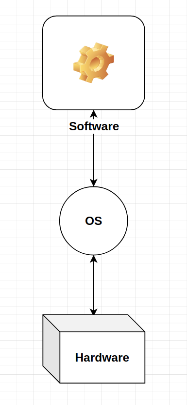
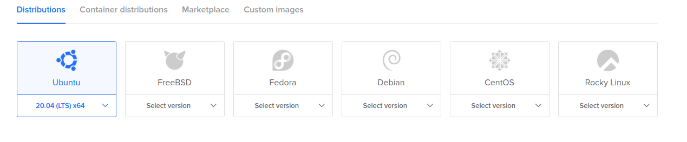
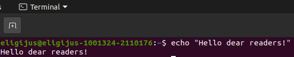

Linux operating system¶
Even with the newest and the most expensive hardware a computer would not be very practical without a convenient way for humans to interact with it. In theory, we could somehow translate certain tasks into 1s and 0s and transfer that information to a computer in a form of electrons. But I think everybody can agree that that would not be very practical.
To help humans in interacting with the hardware in the computer in a more easy way, operating systems with a vast amount of programs are beeing created and updated almost every day.
An operating system (OS) is the main computer software which manages the interactions between all the programs in the computer and the computer’s hardware[Wikipedia, 2021].
Software is a collection of instructions (code) which tells the computer what to do and how to work.
A computer program is a collection of software that solves a specific task.

Kernel¶
A kernel is a computer program at the core of a computer’s operating system and has complete control over everything in the system. <…> On most systems, the kernel is one of the first programs loaded on startup (after the bootloader). It handles the rest of startup as well as memory, peripherals, and input/output (I/O) requests from software, translating them into data-processing instructions for the central processing unit [Wikipedia, 2021].
In the Oxford dictionary, a kernel is the central, most important part of an idea or a subject.
Putting these two definitions together, we can say that the kernel is the most import program in the computer OS.
Popular examples of OS¶
The most used desktop operating systems around the world (as of June 2021) are[Statista, 2021]:
Windows (73%)
macOS (15.6%)
Linux (2.7%)
Others
Linux operating system¶
Altough Linux OS is not popular among casual computer users, it is very popular in the developer circles. Linux has a lot of distributions (think of it as types of Linux with different programs running on it and different kernels). The most popular ones are:
Ubuntu
CentosOS
Debian
Linux Mint
ArchLinux
A full list of all available distributions ranked on popularity can be found here.
In big cloud service providers the most popular choices for virtual machines are Linux distributions.
DigitalOcean :

A developer who wants to serve machine learning in production should know atleast the crucial concepts of Linux. This will make developing ML apps easier and cheaper.
Linux then and now¶
History¶
In the 1960s and 1970s, computers were way bigger then they are today. Every operating system written was very specific to the computer model in question.
“While the sizes of those computers posed substantial problems, there was one thing that made this even worse: every computer had a different operating system. Software was always customized to serve a specific purpose, and software for one given system didn’t run on another system. Being able to work with one system didn’t automatically mean that you could work with another. It was difficult, both for the users and the system administrators. Computers were extremely expensive then, and sacrifices had to be made even after the original purchase just to get the users to understand how they worked. The total cost per unit of computing power was enormous.”[Garrels, 2008]
In 1969, a team of developers in the Bell Labs laboratories started working on a solution for the software problem, to address these compatibility issues. They developed a new operating system, which was
Simple and elegant.
Written in the C programming language instead of in assembly code.
Able to recycle code.
The Bell Labs developers named their project “UNIX.”
As the computer became smaller and more affordable, they began to populate more and more households. Up untill the 1990s, the UNIX project covered the big computers that were in academia, government or big corporations. There was still an issue with desktop operating systems. Back then, many people simply ran MS DOS or Windows 3.1.
Beggining in 1991 a student in the University of Helsinky named Linus Torvalds started proposing and developing a UNIX based system for home computers. A couple of years later, Linus’ project user base grew to 12000 users. Back then, these were all hardcore programmers and it became a running joke to call themselves “freaks”. Linus Torvalds proposed to call the UNIX OS he was developing as FREAX (free, freaks and x for UNIX). The University of Helsinky dismissed this name and started calling the project as Linux (Linus and Unix). Thus the name sticked and right now, Linux is used by millions of users and companies around the world.
Learning curve¶
As per [Garrels, 2008]:
“Whether Linux is difficult to learn depends on the person you’re asking. Experienced UNIX users will say no, because Linux is an ideal operating system for power-users and programmers, because it has been and is being developed by such people. Everything a good programmer can wish for is available: compilers, libraries, development and debugging tools. These packages come with every standard Linux distribution. The C-compiler is included for free - as opposed to many UNIX distributions demanding licensing fees for this tool”
“Linux felt better than the rest of the “lusers” who hadn’t seen the light yet. It was common practice to tell a beginning user to “RTFM” (read the manuals). While the manuals were on every system, it was difficult to find the documentation, and even if someone did, explanations were in such technical terms that the new user became easily discouraged from learning the system. The Linux-using community started to realize that if Linux was ever to be an important player on the operating system market, there had to be some serious changes in the accessibility of the system.”
“Companies such as RedHat, SuSE and Mandriva have sprung up, providing packaged Linux distributions suitable for mass consumption. They integrated a great deal of graphical user interfaces (GUIs), developed by the community, in order to ease management of programs and services. As a Linux user today you have all the means of getting to know your system inside out, but it is no longer necessary to have that knowledge in order to make the system comply to your requests.”
Personaly, the switch from Windows to Ubuntu (a Linux distribution) was not as difficult as I have thought. All the logic seems to be very similar to that of Windows: point and clicking, folder traversal, making copies, opening files - everything can be done both with a command line and with the help of a graphical interface.
Key features of Linux¶
The main differences between Linux and other OS from a practical point of view are:
Easy-to-use command line terminal
The directory system
Permission system
Processes managment system
Command line terminal¶
The terminal in Linux by default is a Unix Shell called Bash.
A Unix Shell is a command prompt used in Linux to transfer commands from the user to the operating system.

In the example above the command which was invoked was echo which as an argument takes in a string and then prints it out in the terminal.
The popular commands who come up often when working with Linux:
ls - Displays a list of files in the current working directory, like the dir command in DOS
cd - directory change directories
cat –textfile - throws content of –textfile on the screen
pwd - display present working directory
exit or logout - leave this session
cp –file –destination - copies the –file to –destination
The general syntax for bash commands is the following:
command [--parameters] [arguments]
There are ussualy some additional parameters with which we can execute a command. Theser are written with – or - at the begining. For example,
The command ls in the root directory / prints out:
ls
bin boot cdrom dev etc home lib lib32 lib64 libx32 lost+found media mnt opt proc root run sbin snap srv swapfile sys tmp usr var
Adding a parameters -la gives us:
ls -la
drwxr-xr-x 20 root root 4096 liep. 6 13:29 .
drwxr-xr-x 20 root root 4096 liep. 6 13:29 ..
lrwxrwxrwx 1 root root 7 liep. 6 13:29 bin -> usr/bin
drwxr-xr-x 4 root root 4096 lapkr. 15 16:48 boot
drwxrwxr-x 2 root root 4096 liep. 6 13:29 cdrom
drwxr-xr-x 22 root root 4960 lapkr. 17 12:29 dev
drwxr-xr-x 146 root root 12288 lapkr. 16 13:05 etc
drwxr-xr-x 3 root root 4096 liep. 6 13:29 home
lrwxrwxrwx 1 root root 7 liep. 6 13:29 lib -> usr/lib
lrwxrwxrwx 1 root root 9 liep. 6 13:29 lib32 -> usr/lib32
lrwxrwxrwx 1 root root 9 liep. 6 13:29 lib64 -> usr/lib64
lrwxrwxrwx 1 root root 10 liep. 6 13:29 libx32 -> usr/libx32
drwx------ 2 root root 16384 liep. 6 13:28 lost+found
drwxr-xr-x 3 root root 4096 liep. 6 16:40 media
drwxr-xr-x 2 root root 4096 vas. 9 2021 mnt
drwxr-xr-x 7 root root 4096 lapkr. 8 12:11 opt
dr-xr-xr-x 575 root root 0 lapkr. 17 12:29 proc
drwx------ 8 root root 4096 rugp. 12 16:31 root
drwxr-xr-x 39 root root 1140 lapkr. 17 12:29 run
lrwxrwxrwx 1 root root 8 liep. 6 13:29 sbin -> usr/sbin
drwxr-xr-x 16 root root 4096 spal. 13 17:40 snap
drwxr-xr-x 2 root root 4096 vas. 9 2021 srv
-rw------- 1 root root 2147483648 liep. 6 13:28 swapfile
dr-xr-xr-x 13 root root 0 lapkr. 17 12:29 sys
drwxrwxrwt 28 root root 16384 lapkr. 17 12:35 tmp
drwxr-xr-x 14 root root 4096 vas. 9 2021 usr
drwxr-xr-x 15 root root 4096 liep. 6 21:19 var
Linux directory system¶
The files in most of Linux distributions are stored in standartized folders. The start path of all the directories is called the root and is denoted as “/”. The command:
cd /
Will always bring the bash terminal to the root of your computers’ file system.
The main directories which are present in most Linux distributions are:
├── bin
├── boot
├── dev
├── etc
├── home
├── lib
├── media
├── mnt
├── opt
├── proc
├── root
├── run
├── snap
├── srv
├── sys
├── tmp
├── usr
└── var
You can navigate to these directories using the cp command or by using a GUI and point and clicking with a mouse.
All the directories have specific purposes and most of the software installed in Linux follows predifined rules.
According to the official Linux documentation [Brown, 2018]:
/bin
Directory that contains binaries, that is, some of the applications and programs you can run. You will find the ls program mentioned above in this directory, as well as other basic tools for making and removing files and directories, moving them around, and so on.
/boot
Directory that contains files required for starting your system.
/dev
Directory that contains device files. Many of these are generated at boot time or even on the fly. For example, if you plug in a new webcam or a USB pendrive into your machine, a new device entry will automagically pop up here.
/etc
Directory where names start to get confusing. /etc gets its name from the earliest Unixes and it was literally “et cetera” because it was the dumping ground for system files administrators were not sure where else to put.
Nowadays, it would be more appropriate to say that etc stands for “Everything to configure,” as it contains most, if not all system-wide configuration files. For example, the files that contain the name of your system, the users and their passwords, the names of machines on your network and when and where the partitions on your hard disks should be mounted are all in here.
/home
Directory where you will find your users’ personal directories. In my case, under /home there is one directory: /home/eligijus.
/lib
/lib is where libraries live. Libraries are files containing code that your applications can use. They contain snippets of code that applications use to draw windows on your desktop, control peripherals, or send files to your hard disk.
There are more lib directories scattered around the file system, but this one, the one hanging directly off of / is special in that, among other things, it contains the all-important kernel modules. The kernel modules are drivers that enables software interact with hardware and vice versa.
/media
The /media directory is where external storage will be automatically mounted when you plug it in and try to access it. As opposed to most of the other items on this list, /media does not hail back to 1970s, mainly because inserting and detecting storage (pendrives, USB hard disks, SD cards, external SSDs, etc) on the fly, while a computer is running, is a relatively new thing.
/mnt
The /mnt directory, however, is a bit of remnant from days gone by. This is where you would manually mount storage devices or partitions. It is not used very often nowadays.
/opt
The /opt directory is often where software you compile (that is, you build yourself from source code and do not install from your distribution repositories) sometimes lands. Applications will end up in the /opt/bin directory and libraries in the /opt/lib directory.
A slight digression: another place where applications and libraries end up in is /usr/local, When software gets installed here, there will also be /usr/local/bin and /usr/local/lib directories. What determines which software goes where is how the developers have configured the files that control the compilation and installation process.
/proc
/proc, like /dev is a virtual directory. It contains information about your computer, such as information about your CPU and the kernel your Linux system is running. As with /dev, the files and directories are generated when your computer starts, or on the fly, as your system is running and things change.
/root /root is the home directory of the superuser (also known as the “Administrator”) of the system. It is separate from the rest of the users’ home directories BECAUSE YOU ARE NOT MEANT TO TOUCH IT.
/run
/run is another new directory. System processes use it to store temporary data for their own nefarious reasons. This is another one of those DO NOT TOUCH folders.
/usr
The /usr directory was where users’ home directories were originally kept back in the early days of UNIX. However, now /home is where users kept their stuff as we saw above. These days, /usr contains a mish-mash of directories which in turn contain applications, libraries, documentation, wallpapers, icons and a long list of other stuff that need to be shared by applications and services.
You will also find bin, sbin and lib directories in /usr. What is the difference with their root-hanging cousins? Not much nowadays. Originally, the /bin directory (hanging off of root) would contain very basic commands, like ls, mv and rm; the kind of commands that would come pre-installed in all UNIX/Linux installations, the bare minimum to run and maintain a system. /usr/bin on the other hand would contain stuff the users would install and run to use the system as a work station, things like word processors, web browsers, and other apps.
But many modern Linux distributions just put everything into /usr/bin and have /bin point to /usr/bin just in case erasing it completely would break something. So, while Debian, Ubuntu and Mint still keep /bin and /usr/bin (and /sbin and /usr/sbin) separate; others, like Arch and its derivatives just have one “real” directory for binaries, /usr/bin, and the rest or *bins are “fake” directories that point to /usr/bin.
/srv
The /srv directory contains data for servers. If you are running a web server from your Linux box, your HTML files for your sites would go into /srv/http (or /srv/www). If you were running an FTP server, your files would go into /srv/ftp.
/sys
/sys is another virtual directory like /proc and /dev and also contains information from devices connected to your computer.
/tmp
/tmp contains temporary files, usually placed there by applications that you are running. The files and directories often (not always) contain data that an application doesn’t need right now, but may need later on.
You can also use /tmp to store your own temporary files — /tmp is one of the few directories hanging off / that you can actually interact with without becoming superuser.
/var
/var was originally given its name because its contents was deemed variable, in that it changed frequently. Today it is a bit of a misnomer because there are many other directories that also contain data that changes frequently, especially the virtual directories we saw above.
Be that as it may, /var contains things like logs in the /var/log subdirectories. Logs are files that register events that happen on the system. If something fails in the kernel, it will be logged in a file in /var/log; if someone tries to break into your computer from outside, your firewall will also log the attempt here.
Linux users and groups¶
A Linux user is anyone who uses a computer. In this case, we are describing the names which represent those users. It may be Mary or Bill, and they may use the names Dragonlady or Pirate in place of their real name. All that matters is that the computer has a name for each account it creates, and it is this name by which a person gains access to use the computer. Some system services also run using restricted or privileged user accounts.
All the users have directory with theyr username in the /home directory.
To create a user in Ubuntu with the name bujokas, we can use the command:
sudo adduser bujokas
The full flow is the following:
sudo adduser bujokas
[sudo] password for eligijus:
Adding user `bujokas' ...
Adding new group `bujokas' (1001) ...
Adding new user `bujokas' (1001) with group `bujokas' ...
Creating home directory `/home/bujokas' ...
Copying files from `/etc/skel' ...
New password:
Retype new password:
passwd: password updated successfully
Changing the user information for bujokas
Enter the new value, or press ENTER for the default
Full Name []:
Room Number []:
Work Phone []:
Home Phone []:
Other []:
Is the information correct? [Y/n] Y
Now listing the directories in the /home directory we get the following:
ls -l /home
total 8
drwxr-xr-x 2 bujokas bujokas 4096 lapkr. 17 13:53 bujokas
drwxr-xr-x 35 eligijus eligijus 4096 lapkr. 17 13:13 eligijus
Managing users is done for the purpose of security by limiting access in certain specific ways. The superuser (root) has complete access to the operating system and its configuration; it is intended for administrative use only.
Any individual may have more than one account as long as they use a different name for each account they create. Further, there are some reserved names which may not be used such as “root”.
Users may be grouped together into a “group”, and users may be added to an existing group to utilize the privileged access it grants.
To add a new group we can use the command:
sudo groupadd -g 11 power_rangers
To add users to the group use the command:
sudo usermod -a -G power_rangers eligijus
sudo usermod -a -G power_rangers bujokas
Linux permission system¶
Linux has a powerfull and, at the same time, easy to use and understandable file and directory permission system.
Lets create a directory in the /home/eligijus directory called misc.
cd /home/eligijus
mkdir misc
In the directory lets create a directory and a file:
cd misc
mkdir files
touch file.md
We can list out the information about the created files with the command:
ls -la
We get the output:
-rw-rw-r-- 1 eligijus eligijus 0 lapkr. 17 13:14 file.md
drwxrwxr-x 2 eligijus eligijus 4096 lapkr. 17 13:14 files
Everything needed to understand about the Linux permission system is coded in the first collumn of the output above.
Symbolic permission representation¶
The first collumn encodes the permissions in a symbolic form with exactly 10 symbols:
----------
The first symbol in the symbolic form indicates the Unix File Type:
- for file
d for directory
c for character special file
b for block special file
l for symbolic link
p for named pipe
s for socket
The 9 following symbols are grouped into 3 triads. The first triad indicates what the owner can do, the second triad indicates what the group members can do and the third triad indicates what other users can do.
The first symbol in the triad can be either - or r (readable).
The second symbol in the triad can be either - or w (writable).
The third symbol in the triad can be either - or x (executable).
Thus, the symbolic permission form of -rw-rw-r– indicates that:
The object is a regular file.
The owner has read and write permission (the first triad is rw-).
The group has read and write permission (the second triad is rw-).
All the other users which are not eligijus and do not belong in the group eligijus have only the read permissions (the third triad is r–).
Octal permission specification¶
The permissions in symbolic form can be represented in octal form as well. Each letter represents a number:
r = 4
w = 2
x = 1
- = 0
Each triad can be represented by the sum of each of the letter. For example,
rw- = 4 + 2 + 0 = 6
— = 0 + 0 + 0 = 0
rwx = 4 + 2 + 1 = 7
Thus a symbolic form of -rw-rw-r– = (ignore the first symbol) [4 + 2 + 0] [4 + 2 + 0] [4 + 0 + 0] = 660.
An octal representation of 700 means taht the owner can read, write and execute the file, the group members and other users cannot do anything with the file.
To change the permisions of the file we can use the chmod (change mode):
chmod 776 file.md
Now the permissions of the file changed to:
-rwxrwxrw- 1 eligijus eligijus 0 lapkr. 17 13:14 file.md
Linux processes¶
An instance of a running program is called a process. Every time you run a shell command, a program is run and a process is created for it. Each process in Linux has a process id (PID) and it is associated with a particular user and user group.
One of the commands to list out the running processes is ps. For a tidy output use:
ps -eo pid,ppid,cmd,user,group,%mem,%cpu --sort=-%mem | head
An example output:
PID PPID CMD USER GROUP %MEM %CPU
6175 6142 /opt/google/chrome/chrome - eligijus eligijus 0.7 2.0
1469 1200 /usr/bin/gnome-shell eligijus eligijus 0.7 1.3
7044 6148 /opt/google/chrome/chrome - eligijus eligijus 0.6 0.3
6123 1200 /opt/google/chrome/chrome - eligijus eligijus 0.6 1.2
306300 6148 /opt/google/chrome/chrome - eligijus eligijus 0.5 5.1
6077 6013 /usr/share/code/code --type eligijus eligijus 0.5 3.4
6386 6148 /opt/google/chrome/chrome - eligijus eligijus 0.4 0.4
107606 6148 /opt/google/chrome/chrome - eligijus eligijus 0.4 0.2
7056 6148 /opt/google/chrome/chrome - eligijus eligijus 0.4 0.1
The PID is the most granural ID for a process.
The PPID is the parent process ID that spawned the child process.
The CMD column indicates the exact command which invoked a process.
The USER and GROUP represent the user and user group that initiated a process.
The %MEM and %CPU fields represent the amount of total available RAM and CPU resources that a process takes.
Process priority¶
The priority or importance of a job is defined by it’s nice number. [Garrels, 2008]
A program with a high nice number is friendly to other programs, other users and the system; it is not an important job. The lower the nice number, the more important a job is and the more resources it will take without sharing them.
To see the nice number of process you can use the same ps command:
ps -eo pid,ppid,cmd,nice,%mem,%cpu --sort=-nice | head
PID PPID CMD NI %MEM %CPU
119 2 [khugepaged] 19 0.0 0.0
1209 1200 /usr/libexec/tracker-miner- - 0.0 0.0
118 2 [ksmd] 5 0.0 0.0
1222 1 /usr/libexec/rtkit-daemon 1 0.0 0.0
1 0 /sbin/init splash 0 0.0 0.3
2 0 [kthreadd] 0 0.0 0.0
10 2 [rcu_tasks_rude_] 0 0.0 0.0
11 2 [rcu_tasks_trace] 0 0.0 0.0
12 2 [ksoftirqd/0] 0 0.0 0.0
The NI column indicates the nicesness of the program.
Making a job nicer by increasing its nice number is only useful for processes that use a lot of CPU time (compilers, math applications and the like). Processes that always use a lot of I/O time are automatically rewarded by the system and given a higher priority (a lower nice number), for example keyboard input always gets highest priority on a system.
Killing and stoping the processes¶
As a non-privileged user, you can only influence your own processes. When you see that one of your processes is eating too much of the system’s resources, there are two things that you can do:
Make the process use less resources without interrupting it;
Stop the process altogether.
In the case that you want the process to continue to run, but you also want to give the other processes on the system a chance, you can renice the process. Appart from using the nice or renice commands, top is an easy way of spotting the troublesome process(es) and reducing priority.
Identify the process in the “NI” column, it will most likely have a negative priority. Type r and enter the process ID of the process that you want to renice. Then enter the nice value, for instance “20”. That means that from now on, this process will take 1/5 of the CPU cycles at the most.
PID to renice [default pid = 361073] 6077
PID USER PR NI VIRT RES SHR S %CPU %MEM TIME+ COMMAND
361073 eligijus 20 0 1720020 298580 137888 R 100,0 0,5 0:01.67 airflow schedul
6077 eligijus 20 0 50,6g 376092 110136 S 12,5 0,6 11:15.34 code
876 message+ 20 0 9068 6252 3916 S 6,2 0,0 0:58.79 dbus-daemon
1251 eligijus 20 0 325212 9232 7484 S 6,2 0,0 5:31.98 gvfs-udisks2-vo
To kill a process, you can use the same top command, but instead of typing r type k (kill) and the process id:
PID to signal/kill [default pid = 6048] 6077
PID USER PR NI VIRT RES SHR S %CPU %MEM TIME+ COMMAND
6048 eligijus 20 0 734756 185412 79628 S 12,5 0,3 3:46.46 code
6077 eligijus 20 0 50,6g 389196 111112 S 6,2 0,6 11:23.19 code
362701 eligijus 20 0 23444 4412 3340 R 6,2 0,0 0:00.01 top
1 root 20 0 169380 13284 8308 S 0,0 0,0 1:04.12 systemd
You can chose two ways to terminate a process: 15 (soft approach) and SIGTERM (the hard approach).